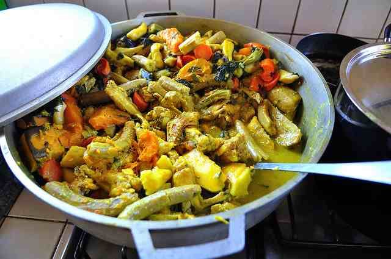

Oildown

Description
Today, oil down, which gets its name from the layer of coconut oil and meat juices that settle to the bottom of the cooking pot — is a staple at the family table and at special gatherings, during the annual Carnival bacchanal or simply as a weekend feast.
"Oil down is a social thing," says Simeon Cornwall, a television producer who has researched the history of the dish for Grenada's National Museum. "If you're cooking oil down, it's because you have a group of people gathering to eat."
Ingredients
- 8-10 dasheen (calallo) leaves
- 1 sprig chive and thyme
- 2 medium carrots chopped
- 1 scotch bonnet (or habenero) pepper
- 1 lb dumplings
- 2 tsp tumeric (saffron)
- 1/2 lb salt meat (pre-soaked overnight)
- 1 large breadfruit
- 2 cups coconut milk
- 1 medium onion
Steps
- Wash and peel breadfruit. Cut into 8 sections. Remove center lengthways of each section and cut into half crosswise.
- Wash and scrape meat, cut into pieces and rinse in lime juice and water.
- Put salted meat into cold water, bring to a boil and drain. Repeat 3 times to remove preserving salt. Cook until just tender and drain.
- Remove skins of onion, rinse and cut into small pieces. Chop dasheen leaves coarsely. Chop chives into small pieces.
- Saute onion and garlic in hot oil until onion is pale yellow.
- Mix coconut milk and tumeric.
- Add all ingredients into large pot, bring to a boil and let simmer for approximately an hour or until liquid is absorbed.
- Remove pepper.
- Serve hot.